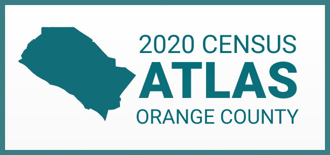

The map to the right displays the number of community-based organizations (CBOs) that conducted outreach activities for the 2020 Census by city. The following slides highlight the cities where the most CBOs held events, passed out flyers, canvassed. etc.. This story map intends to inform these organizations of other work that's being done in their shared service area(s) and should be utilized to form strong networks for futureorganizing movements. The data used to generate this app was provided by Charitable Ventures through the Good Work Collaborative. For a more detailed analysis, please visit the GWC's Census Atlas here: https://occensusatlas.com/docs/home.html
Number of CBOs: > 8
Number of CBOs: 2-8
Number of CBOs: 0-2

This web application visualizes the landscape of community-based organizations (CBOs) that conducted outreach during the 2020 Census in Orange County, CA. Please click the Previous and Next buttons to view the slides.